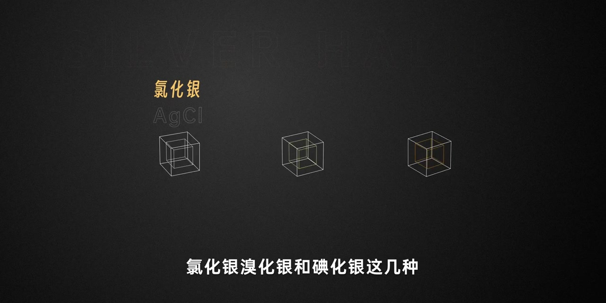
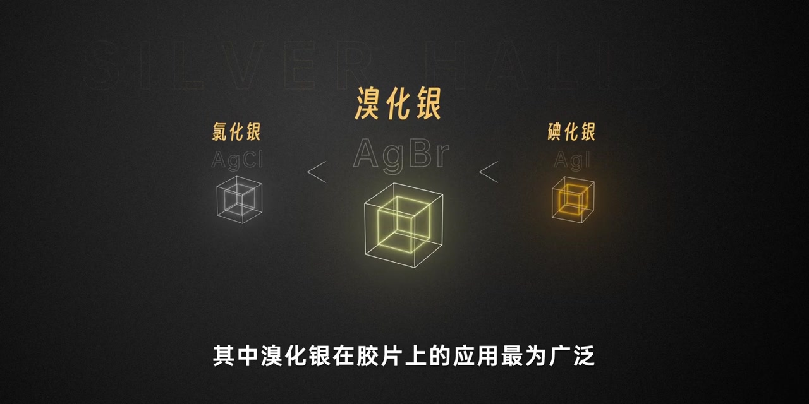
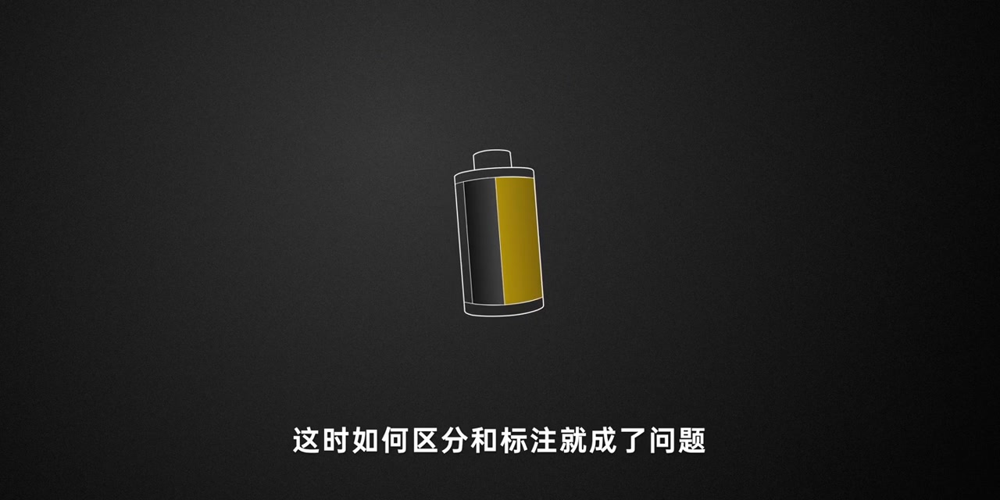
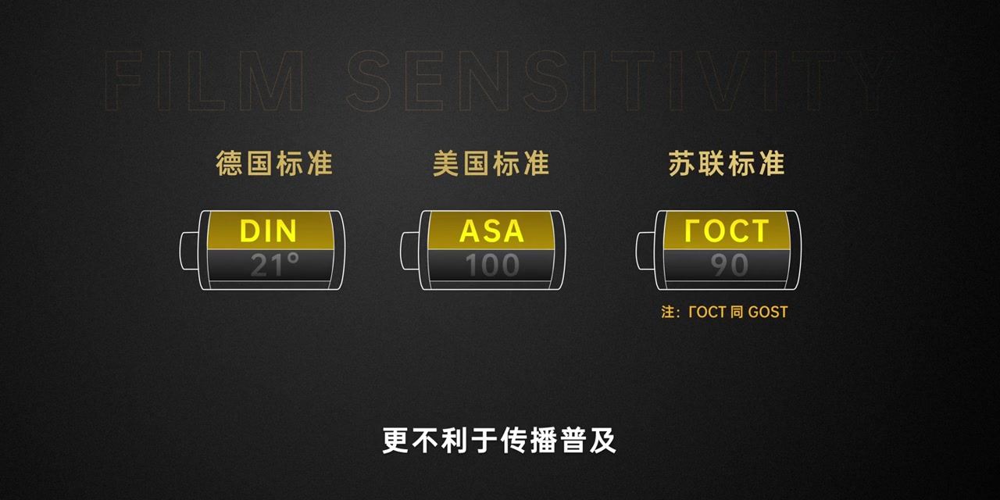
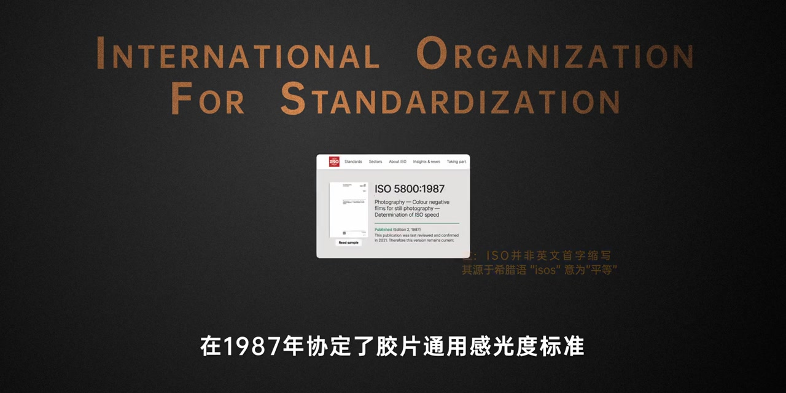
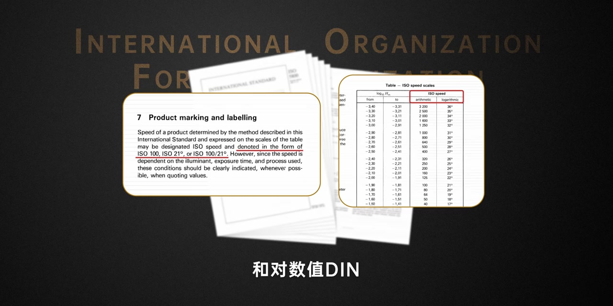
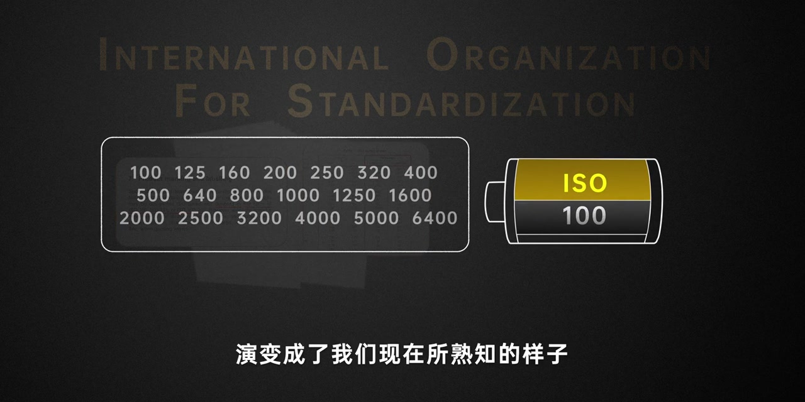
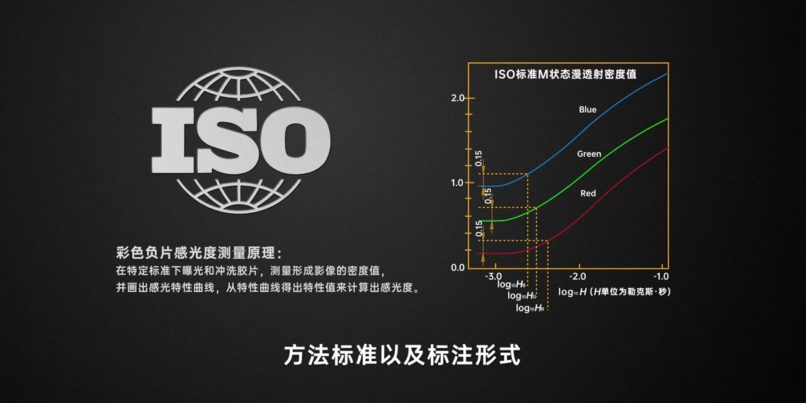

开场：用来做感光材料的几种卤化银
画面是深灰底上的三组线框立方体。旁白先点出制作感光材料的卤化银：氯化银、溴化银和碘化银，并说它们的感光效率由低到高。
画面字幕：「氯化银溴化银和碘化银这几种」
说明：Whisper 常把「卤化银」识成「鲁化银」，「氯化银 / 溴化银 / 碘化银」识成「绿化银 / 秀化银 / 点化银」，「ISO」识成「RSO / ASO」，「柯达」识成「苛达」，「退出」识成「推出」。下文叙述以可见字幕与动画画面为准；页面末尾仍完整保留全部 Whisper 分段。

重点材料：溴化银在胶片上应用最广
中间的溴化银（AgBr）被放大高亮，两侧 AgCl、AgI 缩小，中间还用小于号提示感光效率递进。旁白强调：其中溴化银在胶片上的应用最为广泛；用不同卤化银和辅助材料混合，就能做出感光度高低不同的胶片。
画面字幕：「其中溴化银在胶片上的应用最为广泛」

新问题：感光度高低该怎么区分和标注
画面切到一枚左右分色的胶卷筒图标。旁白把叙事推进到制度层：感光度不同了，如何区分和标注就成了问题；许多厂商和组织都先后制定了自己的标准。
画面字幕：「这时如何区分和标注就成了问题」

标准太多：德标 DIN、美标 ASA、苏标 ГОСТ
三枚胶卷筒并排：德国标准 DIN 21°、美国标准 ASA 100、苏联标准 ГОСТ 90，旁注 ГОСТ 同 GOST。旁白点出主流有德标 DIN、以柯达为首的美标 ASA、苏联的 ГОСТ 等；有标准是好事，但标准太多反而困扰用户，更不利于传播普及。
旁白要点：有标准是好，但标准太多反而会对用户产生困扰，更不利于传播普及。

转折：国际标准化组织与 1987 年通用标准
「之后重点来了」——画面拉出 International Organization for Standardization 全称，并嵌入 ISO 5800:1987 网页截图：彩色负片感光度测定标准。旁白说明该组织在 1987 年协定了胶片通用感光度标准。画面小字还补充：ISO 并非英文首字母缩写，源于希腊语 isos（平等）。
画面字幕：「在1987年协定了胶片通用感光度标准」

标注形式：算术值 ASA + 对数值 DIN
画面放大标准文本：产品可标成 ISO 100、ISO 21° 或 ISO 100/21°，并给出算术值与对数值对照表。旁白说：规定在胶片上标出感光度的算术值 ASA 和对数值 DIN，实际上就是把美标和德标相结合；随着时间推移，标注逐渐简化，演变成现在熟悉的样子——白底数字格旁是「ISO 100」胶卷筒。
画面字幕：「演变成了我们现在所熟知的样子」


正名：ISO 是组织简称，不是「感光度」的翻译
旁白把概念钉死：显然 ISO 并不是感光度的字面翻译，而是一个组织的简称；这个组织规范了胶片感光度的测定原理、方法、标准以及标注形式。画面给出彩色负片感光特性曲线（蓝 / 绿 / 红通道）与测量说明。就这样，ISO 顺理成章成了感光度的代名词。
旁白要点：ISO 规范了测定原理、方法、标准以及标注形式，顺其自然成为感光度的代名词。

收尾：胶片退出主流后，数码仍沿用 ISO 标注
时至今日，胶片退出主流市场、数码崛起，ISO 的标注依然沿用；但数码与胶片在感光材料和成像原理上都变了。画面出现数码机身线稿与高 ISO 数字背景，旁白把问题抛给观众：如今数码时代的 ISO 又该如何理解呢？
画面字幕：「那如今数码时代的ISO又该如何理解呢」
本集停在开放问题上，没有继续展开数码增益、噪声与「等效感光度」细节；后续若有续集，应以新视频为准，勿把本页补写成完整数码 ISO 教程。